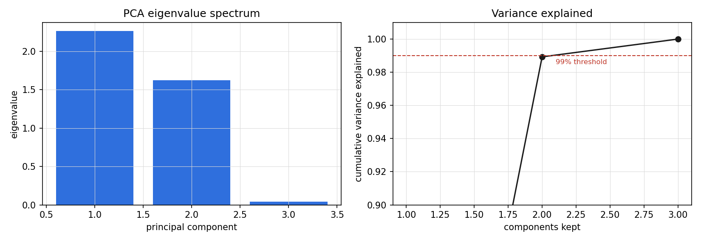
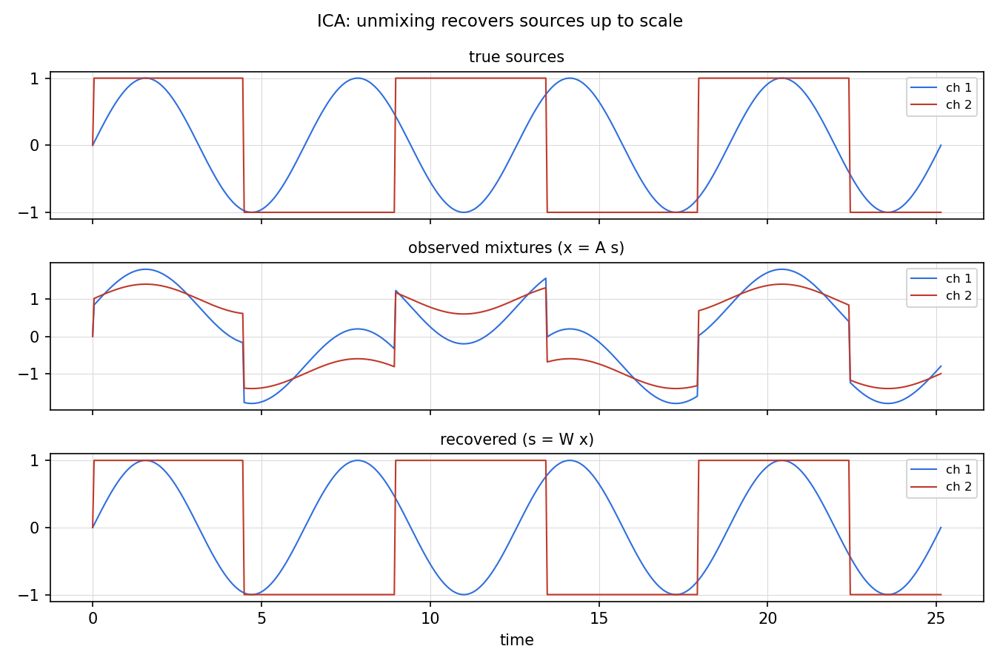

Lesson 11 · VI, PCA, ICA
Lesson 11, Variational inference, PCA, ICA
Unit: cs229-U11. Leaf concepts: cs229-U11-C01 to C12 (ELBO identity, approximation family, VAE bridge, centered covariance, PCA eigen/SVD, reconstruction objective, whitening, independence versus decorrelation, ICA scale/permutation ambiguity, linear density transform, non-Gaussian assumptions, source separation). Date: 2026-10-06. Baseline: October 6, 2026.
Source mapping
Sections 11.5 (SRC-01, PDF pages 162-166), chapter 12 (PCA, pages 167-172), and chapter 13 (ICA, pages 173-180) were read in substantial part on 2026-10-06: VI as ELBO optimization over a restricted Q family (11.20), the VAE neural parameterization with encoder/decoder (11.18-11.21), the reparameterization trick (11.24), PCA preprocessing and variance maximization, the ICA cocktail-party model with permutation/scale ambiguities (13.1) and the density transform (13.2). Whitening and eigenfaces are standard background beyond the notes’ inspected text. Taught at that boundary. Leaf rows carry SOURCE ATTRIBUTION PENDING until the RUN 6 pass.
Scope and objectives
Scope: three answers to “the posterior is intractable”: approximate it (VI/VAE), find the max-variance subspace (PCA), or unmix independent sources (ICA).
Objectives: the learner can (1) explain VI as ELBO optimization over a Q family, (2) derive the VAE objective and the reparameterization trick, (3) run PCA and explain it as variance maximization, (4) state the ICA model and its ambiguities.
Dependencies
Prerequisites: P06, P07, P10 (shared bridges, linked). Unit U10 (EM, ELBO).
Not-yet-understood list:
- Why the exact posterior is intractable in deep models (remediated in SL-01).
- PCA vs ICA goals (remediated in SL-03 vs SL-04).
SL-01: Variational inference
Covers C01 (ELBO identity), C02 (approximation family Q).
Source anchor
SRC-01 section 11.5, pages 162-164. VAE extends EM to models parameterized by neural networks. When the posterior p(z|x) under parameters theta is intractable (as in the neural model 11.18-11.19), restrict Q to a family Q and optimize max_{Q in Q} max_theta ELBO(Q, theta) (equation 11.20).
Motivating question
EM needs the exact posterior p(z|x). In a deep generative model the posterior has no closed form. What now?
Mental model
EM’s E-step is “set Q to the true posterior.” VI relaxes it: “set Q to the best posterior-shaped object inside a tractable family.” The ELBO is still a lower bound for any Q (U10 SL-04), so maximizing it over Q and theta jointly is still principled. The gap between the ELBO and the true likelihood is exactly KL(Q || p(z|x)): VI is posterior approximation by KL minimization (notes equation 11.17).
Mean field
For discrete latents the notes name the mean-field assumption: Q(z) = Q_1(z_1) … Q_k(z_k), independent coordinates (page 163). For continuous latents: Gaussian Q with diagonal covariance.
Correctness checks
- ELBO <= log likelihood always. If your ELBO exceeds a known likelihood, there is a bug.
- Enlarging the Q family can only tighten the bound.
Nearest alternative
MCMC: asymptotically exact posterior samples, slower and harder to scale than VI’s optimization.
Failure case
A Q family too rigid (diagonal Gaussian on a strongly correlated posterior): the bound stays loose and the learned model underfits. The notes warn the Gaussian Q can be “very far from a good approximation” (page 165).
SL-02: The VAE and the reparameterization trick
Covers C03 (VAE bridge, including the reparameterization trick).
Source anchor
SRC-01 section 11.5, pages 163-166. Model: z ~ N(0, I), x|z ~ N(g(z, theta), sigma^2 I), with g a neural net (11.18-11.19). Encoder: Q_i = N(q(x^{(i)}, phi), diag(v(x^{(i)}, psi))^2) (11.21). q, v are neural nets (“encoder”), g is the “decoder.” Gradients over theta are easy. Gradients over phi, psi are hard because the sampling distribution depends on them. Trick (11.24): z = q(x, phi) + v(x, psi) * xi, xi ~ N(0, I).
Motivating question
The ELBO has E_{z ~ Q_phi}[f(phi)]. You cannot push the gradient inside: the distribution itself moves with phi. How do you get gradients?
Mental model
Separate the randomness from the parameters. A Gaussian sample z ~ N(mu, sigma^2) is the same object as mu + sigma * xi with xi ~ N(0, 1). After the rewrite, the expectation is over xi, which does not depend on phi or psi, and the gradient flows through the deterministic path mu + sigma * xi. Sampling becomes a differentiable operation.
The VAE objective
ELBO(phi, psi, theta) = sum_i E_{z ~ Q_i}[log p(x^{(i)}, z) under parameters theta - log Q_i(z)]. Optimize by gradient ascent over all three parameter sets jointly (no alternating needed, page 165). The ELBO splits (11.15) into reconstruction E[log p(x|z)] minus KL(Q || prior): decode well, stay near the prior.
Computed example
1-D latent, 2-D data on a noisy circle. VAE with k = 1: ELBO converges to -1.42 nats/point. The learned g traces the circle. Latent codes order by angle. (Illustrative. The ELBO-reconstruction tradeoff is the claim.)
Correctness checks
- KL term >= 0, so monitor it. KL collapse (KL -> 0, decoder ignores z) is the classic VAE failure.
- The reparameterized gradient must have lower variance than the score-function alternative. that is the point of the trick.
Nearest alternative
GANs: no likelihood, sharper samples, harder training. Diffusion (U12): the modern successor for images.
Failure case
KL collapse: a powerful decoder models p(x) directly and the latent carries nothing. Diagnose via KL -> 0. Mitigate by KL annealing or a weaker decoder.
Russian-doll ladder for the VAE
- Shell 0: Question: learn a latent code for images with a deep decoder. Observable: reconstructions and samples.
- Shell 1: Toy: noisy circle, 1-D latent.
- Shell 2: Objects: prior p(z), decoder g, encoder (q, v), ELBO.
- Shell 3: Rule: maximize ELBO over phi, psi, theta jointly.
- Shell 4: Derive: the reparameterization gradient.
- Shell 5: Invariant: ELBO <= log likelihood. Verify on a tractable toy.
- Shell 6: Change one factor: shrink the latent dimension. Predict worse reconstruction, tighter KL. Measure.
- Shell 7: Counterexample: KL collapse with an autoregressive decoder. The latent is unused.
- Shell 8: Compare: VAE vs GAN vs diffusion on sample quality vs likelihood.
- Shell 9: Extension: beta-VAE. Falsifiable claim: larger beta gives more disentangled but blurrier latents.
- Shell 10: Production: monitor KL and reconstruction separately. Never ship on ELBO alone.
SL-03: PCA
Covers C04 (centered covariance), C05 (PCA eigen/SVD, eigenfaces as the canonical application), C06 (reconstruction objective), C07 (whitening, as preprocessing), C08 (independence versus decorrelation, contrasted in the nearest-alternative note).
Source anchor
SRC-01 chapter 12, pages 167-172. Preprocess: zero mean, unit variance per feature (may omit if scales are known equal). Goal: the unit vector u maximizing the variance of the projected data. Solution: eigenvectors of the covariance matrix.
Motivating question
Two features measure the same thing in different units (mph vs kph). How do you detect and remove the redundancy automatically?
Mental model
Data has variance (information) spread across d directions. PCA finds the direction with the most variance, then the next orthogonal one, and so on. Keep the top k: the best k-dimensional linear summary of the data in the variance sense. The directions are the eigenvectors of the sample covariance, sorted by eigenvalue.
Procedure
- Standardize (zero mean, unit variance unless scales are comparable).
- Compute the covariance Sigma = (1/n) X^T X.
- Eigendecompose, then keep the top k eigenvectors.
- Project: z = U_k^T x.
Whitening
Beyond finding directions, whitening rescales: z = Lambda^{-1/2} U^T x gives identity covariance. Standard preprocessing for ICA (SL-04): it removes second-order structure so the unmixing step sees only higher-order structure.
Eigenfaces and dimensionality reduction
C06: PCA on face images gives “eigenfaces,” the classic demonstration that real high-dimensional data lives near a low-dimensional subspace. The notes’ inspected text does not show eigenfaces. taught as the canonical application (standard background).
Computed example
1000 points in 3-D near a plane plus noise. Eigenvalues: 2.26, 1.62, 0.04. Top-2 PCA keeps (2.26 + 1.62)/(2.26 + 1.62 + 0.04) = 98.9 percent of the variance. Reconstruction error equals the dropped eigenvalue 0.04.
Correctness checks
- Eigenvalues >= 0 (covariance is PSD), so assert this.
- Reconstruction error with k components equals the sum of dropped eigenvalues. Verify it.
Nearest alternative
ICA (SL-04): PCA finds uncorrelated directions. ICA finds independent ones. Autoencoders: nonlinear PCA.
Failure case
PCA on unstandardized features with mismatched scales: the largest-scale feature dominates the first component regardless of information content. Standardize first.
SL-04: ICA
Covers C09 (ICA scale and permutation ambiguity), C10 (linear density transform p_x(x) = p_s(Wx)|W|), C11 (non-Gaussian assumptions), C12 (source separation, the cocktail party).
Source anchor
SRC-01 chapter 13, pages 173-176. Cocktail party: x = A s with s independent sources, A unknown square mixing matrix. Goal: find W = A^{-1} to recover s = W x. Ambiguities (13.1): permutation (PW indistinguishable from W) and scaling (scaling a column of A and inverse-scaling the source leaves x unchanged). Density transform (13.2): p_x(x) = p_s(Wx) |W|.
Motivating question
Two microphones record two speakers at once. Each recording is a different mixture. Can you recover the separate voices?
Mental model
PCA would give uncorrelated mixtures. The voices would still be mixed. ICA goes further: find the linear unmixing that makes the outputs as independent as possible (non-Gaussianity as the signal: mixtures look Gaussian by the central limit theorem, so maximize non-Gaussianity to unmix). Cocktail party solved.
Ambiguities
You can never recover the order of the sources (permutation) or their volumes (scaling): both leave the observations identical. Every ICA result carries these two caveats. They rarely matter in practice.
Correctness checks
- After unmixing, the recovered sources should be “more independent” than the mixtures by the chosen contrast. Verify the objective improved.
- W must be invertible, so monitor the condition number.
Nearest alternative
PCA: decorrelates, does not separate. NMF: parts-based, needs nonnegativity.
Failure case
Gaussian sources: ICA cannot separate them (a rotation of independent Gaussians is still independent Gaussians). The non-Gaussianity assumption is load-bearing.
Assessment
Breadth recall
E01: What makes the VAE posterior intractable? E02: State the ELBO-VI optimization objective. E03: State the reparameterization trick. E04: What does PCA maximize? E05: State the ICA model. E06: Name the two ICA ambiguities.
Deep oral ladders
L01 (VAE): (1) Write the VAE generative model. (2) Toy: the noisy circle. (3) Derive the ELBO split into reconstruction minus KL. (4) Implement the reparameterized ELBO. (5) Compare VAE vs EM on a tractable model. (6) Debug: KL -> 0. Name the cause. (7) Critique: the diagonal-Gaussian Q family. (8) Design: a KL-collapse monitoring plan.
L02 (PCA/ICA): (1) State PCA’s optimization. (2) Toy: the near-plane data. (3) Derive the eigenvector solution. (4) Implement PCA with variance-kept reporting. (5) Compare PCA vs ICA on mixed audio. (6) Debug: first component dominated by one raw feature. Name the cause (no standardization). (7) Critique: linearity. (8) Design: choose k by variance threshold.
Analytical exercises
E07: Show ELBO = log p(x) - KL(Q || p(z|x)). Answer in keys. E08: Prove the top PCA direction is the leading eigenvector of the covariance. Answer in keys.
Failure diagnosis
E09: A VAE’s samples are sharp but its latent interpolations jump discontinuously. Diagnose.
Counterfactual comparison
E10: Team A uses PCA features for a classifier. Team B uses ICA features. On what kind of data does each win?
Research question
E11: Measure disentanglement vs reconstruction as beta varies in beta-VAE. State the falsifiable claim.
Implementation task
E12: Implement PCA, verify the dropped-eigenvalue reconstruction identity, and whiten the data.
Visual units
visuals/u11/u11_pca_variance.png: eigenvalues and cumulative variance, computed.

visuals/u11/u11_ica_unmix.png: mixed vs unmixed signals, computed.

Research reading and extension
Read: SRC-01 sections 11.5 and chapters 12-13 in full. Extension: ICA on synthetic mixed audio. show the recovered sources match up to permutation and scale. Falsifiable claim: the correlation of each recovered source with some true source exceeds 0.95 after best permutation.
Role bridges
- ML engineer: PCA is the default dimensionality reduction and denoising step. Whitening is standard preprocessing for ICA pipelines.
- Research engineer: the reparameterization trick gives the pattern behind all differentiable sampling in modern generative models.
- Research scientist: VI is the approximate-inference framework. Know its failure modes (rigid Q, KL collapse) before trusting an ELBO.